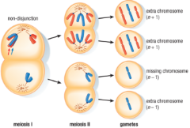
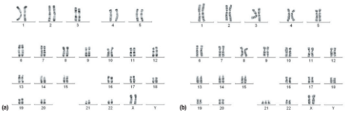
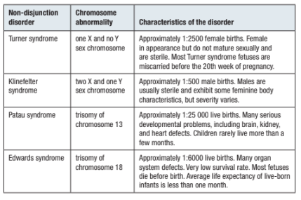
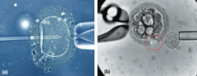
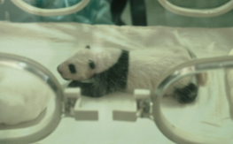

Abnormal Meiosis and/or Fertilization
Common traits among people with Down syndrome may include a round, full face; short height; and a large forehead. Although Down syndrome is associated with developmental and intellectual disabilities, people with Down syndrome maintain a wide range of abilities and are generally able to carry out rich, fulfilling lives.
Abnormal Meiosis: Nondisjunction
Nondisjunction occurs when homologous chromosomes fail to separate during meiosis. The result is that one of the daughter cells will have an extra chromosome, while the other will be missing a chromosome.

Non-disjunction of homologous chromosomes during meiosis I results in two gametes with one extra chromosome (n + 1) and two gametes that are short one chromosome (n − 1).
|
In humans, non-disjunction results in gametes with 24 or 22 chromosomes. Consider the implications for the offspring. If a gamete with 24 chromosomes joins with a normal gamete (having 23 chromosomes) from the opposite sex, the resulting zygote will have 47 chromosomes instead of 46 (the normal chromosome number).
The zygote will have 22 pairs of chromosomes and three copies of one chromosome, a chromosomal abnormality referred to as trisomy. However, if a gamete with 22 chromosomes joins with a normal gamete (having 23 chromosomes) from the opposite sex, the resulting zygote will have 45 chromosomes. Although the zygote will have 22 pairs of chromosomes, it will be missing one of its homologous chromosomes for the remaining pair, a genetic abnormality known as monosomy.
Non-disjunction is responsible for a variety of human genetic disorders, including Down syndrome, Turner syndrome, and Klinefelter syndrome. Compare the karyotype of a normal female with that of a female who has Down syndrome—a chromosomal abnormality in which there is an extra chromosome number 21. Down syndrome is also called trisomy 21. |

|
A karyotype of (a) a normal female and (b) a female with Down syndrome (trisomy 21).
Common traits among people with Down syndrome may include a round, full face; short height; and a large forehead. Although Down syndrome is associated with developmental and intellectual disabilities, people with Down syndrome maintain a wide range of abilities and are generally able to carry out rich, fulfilling lives. |
Selected Human Non-disjunction Disorders

Non-disjunction disorders are usually confirmed by preparing a karyotype. Technicians usually prepare a karyotype by obtaining and mixing a small sample of white blood cells with a solution that stimulates mitotic division. A different solution is added that stops division at metaphase when the chromosomes are most condensed and can be photographed and sorted. The completed karyotype is then examined and the disorder is diagnosed.
Prenatal Testing
A number of genetic disorders can be detected in a fetus or embryo prior to birth. Testing for a genetic disorder prior to birth is called prenatal testing. Prenatal testing for chromosome abnormalities often requires collecting and observing fetal cells, which can be obtained in a number of ways. Once the fetus is large enough, it becomes possible to obtain cells from the fluid-filled sac that surrounds the fetus, a technique called amniocentesis. Amniocentesis involves the use of a long syringe and an ultrasound machine.

Problems with Fertilization
Much more common than a chromosome abnormality is the inability to conceive a child. In Ontario, approximately 10 % of couples who are trying to conceive experience problems. Of these cases, approximately one-third are attributed to the female and one-third to the male. The remaining one-third are ascribed to both individuals or are of an undetermined cause. There are many possible causes of infertility. They include poor or reduced egg and sperm quality and production, blocked fallopian tubes in women, and blockage in either the epididymis or vas deferens of the male.
Assisted Reproductive Technologies (ARTs)
Assisted reproductive technologies (ARTs) are technologies used to enhance the chances of reproductive success. ARTs can be used to increase sperm and egg production, improve the chances of successful fertilization, and enhance the likelihood of implantation and development. An assisted reproduction program may involve the use of fertility drugs and the sourcing, selection, and manipulation of eggs, sperm, and/or embryos outside the human body.
In Vitro Fertilization (IVF)
As science and technology advance, more and more techniques are being made available to increase the success rates associated with in vitro fertilization. Two of these are intracytoplasmic sperm injection (ICSI) and laser-assisted hatching (LAH).
Intracytoplasmic sperm injection is a form of IVF that involves the injection of a single sperm directly into the cytoplasm of an egg.
In Vitro Fertilization (IVF)
(a) An egg cell is being directly fertilized by the injection of a single sperm using a micropipette. (b) The relatively thick zona pellucida is being reduced on the bottom right side of the embryo. A laser targeting circle is used to precisely aim before firing a high-energy laser pulse.

Artificial Insemination
Artificial insemination (AI) is the placement of sperm into the reproductive tract of a female. In humans, this process is referred to as intrauterine insemination. A sperm sample from the donor male is “washed’ to concentrate the sperm, which are then inserted directly into the uterus. Fresh or previously frozen sperm can be used.
Implications of Reproductive Technologies
Advances in science and technology are providing insights into the underlying causes of human reproductive disorders and new methods of treating and overcoming them. Many of these same advances are being applied to non-human organisms. Many of these concerns are most strongly held with regard to applying these technologies to humans rather than other species.
Non-human Applications of Reproductive Technology
Many reproductive technologies are being applied to animal breeding and wildlife conservation efforts. Artificial insemination (AI), for example, is used in the breeding of livestock, pets, captive wild animals, and even honeybees. In fact, artificial insemination has been used extensively in agriculture for many decades.
Artificial insemination is also a valuable tool in efforts to save endangered species. Giant pandas are one of the world’s most critically endangered species. Unfortunately, reproductive rates are low, even in the wild, and in captivity, males and females often show little or no interest in breeding. To date, Chinese scientists have produced over 100 baby pandas using artificial insemination.

A baby giant panda born at the Chengdu research facility in China
|
The benefits of artificial insemination include the following:
|